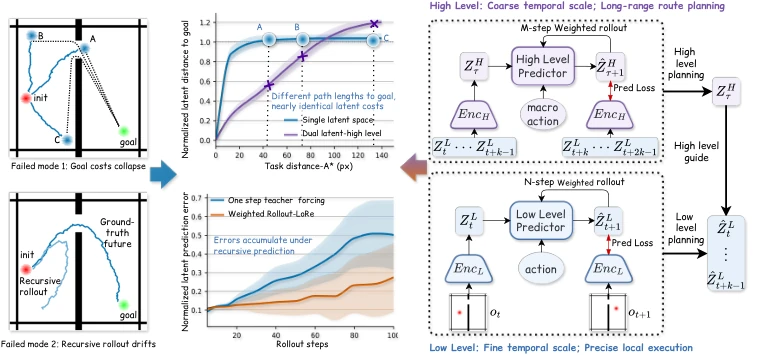
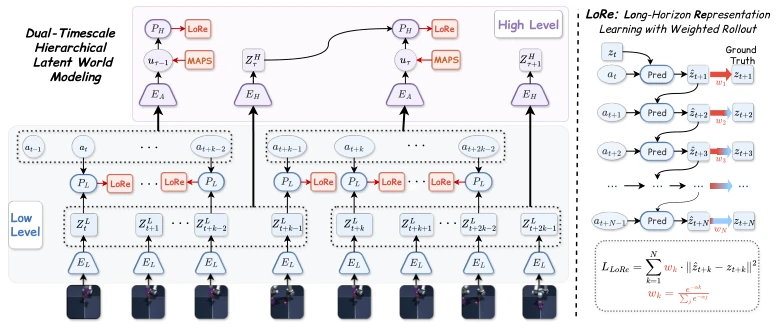
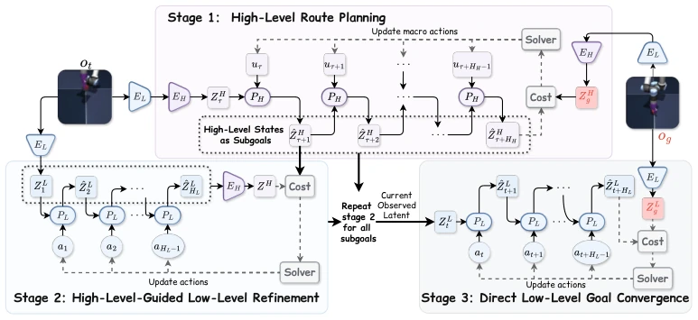
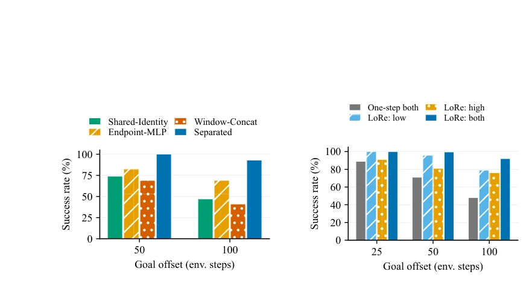
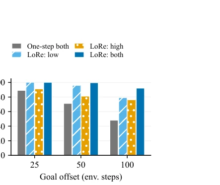
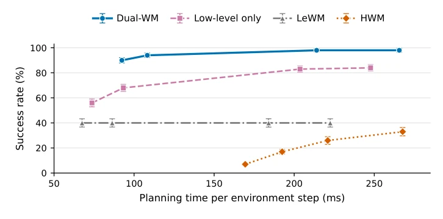
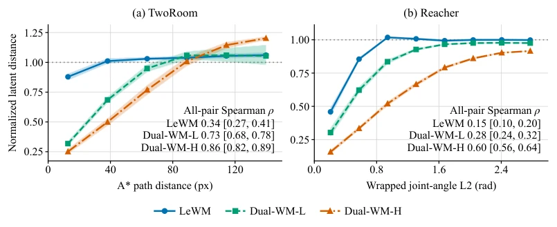
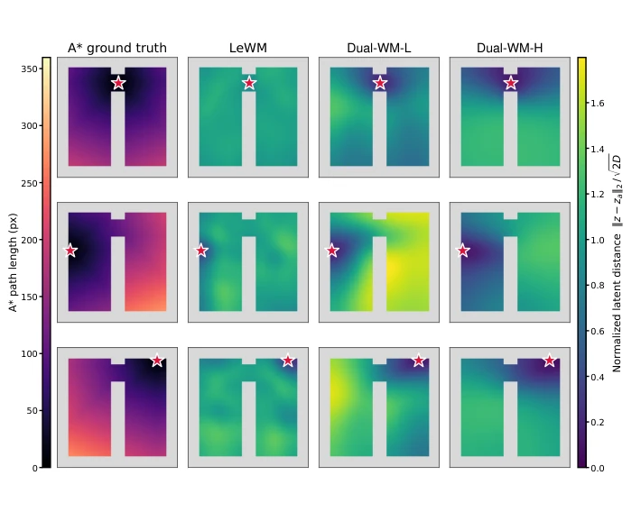
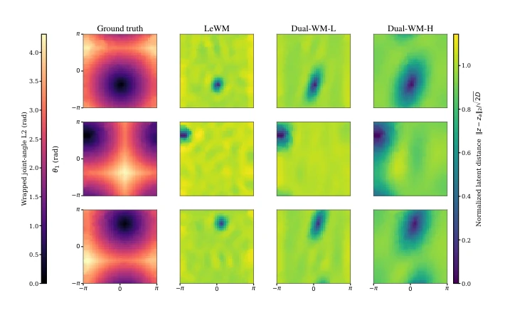
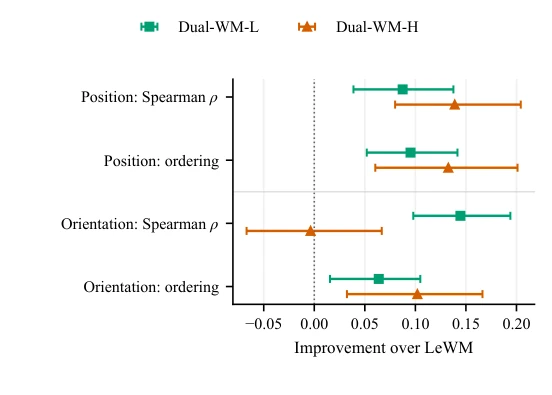

This paper opens a 'dual-channel' for long-horizon planning. Dual-WM splits local execution and long-term planning into two latent spaces; theoretically very appealing, after all, a single space is indeed prone to distance collapse. LoRe weighted rollout is also quite clever, solving recursive error accumulation. But the cost is that the model becomes more complex, and training costs are definitely high. Experiments run on offline data, generalization is questionable. Although stronger than LeWM, it is still far from 'general intelligence', more of an engineering tuning victory. However, it did perform reliably on long-horizon tasks, at least not like some JEPA where distance concentrates to the point of being unable to distinguish targets. In addition, although MAPS regularization improved search stability, it also limited the expressive power of macro actions, potentially affecting performance on complex tasks.
研究动机Motivation
现有 latent world models 在长视界规划有两个硬伤：递归 rollout 误差累积导致轨迹漂移，以及高维潜空间距离集中导致目标距离区分度下降 (Aggarwal et al., 2001)。虽然 HWM (Zhang et al., 2026a) 等分层模型试图缩短 rollout，但共享潜空间几何结构无法同时满足局部精细控制和长程目标评估的需求。单一几何结构下，局部重要变化会淹没长程任务进展信号，导致 planner 无法区分远距离候选状态。LeWM (Maes et al., 2026) 虽稳定但长视界性能受限，亟需分离时空角色。此外，现有方法多依赖单步监督，缺乏对长程一致性的显式约束，导致想象轨迹与真实演化发散。
Existing latent world models have two significant drawbacks in long-horizon planning: recursive rollout error accumulation leads to trajectory drift, and high-dimensional latent space distance concentration leads to decreased target distance discriminability (Aggarwal et al., 2001). Although hierarchical models like HWM (Zhang et al., 2026a) attempt to shorten rollout, the shared latent space geometric structure cannot simultaneously meet the needs of local fine-grained control and long-range goal evaluation. Under a single geometric structure, local important changes will drown out long-range task progress signals, leading to the planner being unable to distinguish distant candidate states. LeWM (Maes et al., 2026) is stable but long-horizon performance is limited, urgently needing separation of spatiotemporal roles. In addition, existing methods mostly rely on single-step supervision, lacking explicit constraints on long-range consistency, leading to divergence between imagined trajectories and real evolution.

Figure 1: Overview of the long-horizon planning problem and our dual-latent solution. (a) Two failure modes in a single latent space: goal costs collapse for distant states, and recursive rollouts drift from the ground-truth future. (b) Latent-space diagnostics: the high-level space preserves task-distance contrast, while weighted rollout training reduces multi-step prediction error relative to one-step teacher forcing. (c) Dual-WM assigns coarse route planning to a high-level latent and precise local execution to a low-level latent.
The core is the Dual-WM architecture, separating state representation and dynamics models by temporal roles. Low-level models (EL, PL) capture fine-grained action-conditioned transitions, high-level models (EH, PH) use learned macro-actions to plan long-term. The two are coupled by EH mapping low-level latent windows to high-level states. Training proposes LoRe, performing weighted supervision on self-generated rollouts at two scales, with weights decaying exponentially with horizon to balance multi-step prediction errors and prevent recursive error accumulation. Macro-actions are regularized as Gaussian priors via MAPS, facilitating sampling optimization. Inference is divided into three stages: high-level planning path generates sub-goals, low-level refines sub-goals, finally directly converges at low-level. This design allows each space to organize state differences according to the supported tasks, solving the problem where a single geometric structure cannot balance local sensitivity and long-range discriminative power.

Figure 2: Training the dual-timescale latent world model. The low-level encoder EL and predic- tor PL model fine-scale transitions, while EH encodes length-k low-level latent windows and PH models temporally extended transitions. The action encoder EA produces macro-actions, MAPS regularizes their posterior, and LORE supervises self-generated predictions at both levels.

Figure 3: Three-stage planning with the trained dual-latent world model. Stage 1 plans a high-level route and produces latent subgoals; Stage 2 refines subgoals with low-level actions while comparing latent windows through EH; Stage 3 performs direct low-level goal convergence.
Tested on 5 visual control tasks including TwoRoom, Reacher, etc., with goal offsets 50 and 100. Compared to LeWM and the strongest baseline, Dual-WM significantly improved average success rate at offset 100 (69.5% vs 61.4%). Ablation studies prove hierarchical design and LoRe weighted training are both effective. Latent space diagnosis shows high-level space retained better task distance contrast. Discrete tasks like Sokoban-Long also verified generalization. On TwoRoom, Dual-WM reached 92.5% at offset 100, far exceeding LeWM's 27%.

Figure 4: Latent-space design on TwoRoom. All variants share the low-level checkpoint and hierarchical planning. Window-Concat directly concatenates the same window used by Sepa- rated (Dual-WM). Bars show mean success.

Figure 5: LoRe scales on TwoRoom. Both model levels and hierarchical planning are re- tained; inactive levels use one-step supervision. Bars show mean success.

Figure 7: Success–time tradeoff on TwoRoom at goal offset 100 and an execution budget of 125 en- vironment steps. Each method has four measured planning-budget settings; lines connect successive settings. Error bars show ± one standard deviation across three planning seeds.

Figure 13: Latent-distance concentration on held-out state pairs. We plot dimension-normalized Euclidean latent distance against A* endpoint path distance in TwoRoom (left) and wrapped joint- angle distance in Reacher (right). Curves are equal-width-bin means and shaded regions are 95% episode-bootstrap confidence intervals. The displayed task-relevant ranges are 0–150 px and 0–3 rad, respectively; annotated rank correlations use all held-out pairs. Only bins with at least 100 valid pairs are displayed. The dotted line marks the independent isotropic-Gaussian reference.
其他图片Other Figures

Figure 14: TwoRoom distance fields for three prespecified members of a geometry-only nine-anchor maximin set; stars mark the query states. Each row contains one A* reference followed by LeWM, Dual-WM-L and Dual-WM-H latent distances normalized by √

Figure 15: Reacher distance fields for three query states (rows). Columns show wrapped joint- angle distance, LeWM, Dual-WM-L, and Dual-WM-H. Model distances are normalized by √

Figure 16: PushT goal-geometry improvements relative to LeWM on 128 held-out episodes. Dots are paired differences for Dual-WM-L and Dual-WM-H; error bars are 95% episode-cluster boot- strap confidence intervals (2,000 draws). Positive values favor Dual-WM. Correlations use physical goal distance, while ordering accuracy measures which state in a same-episode pair is closer to the goal; exact physical ties are excluded.